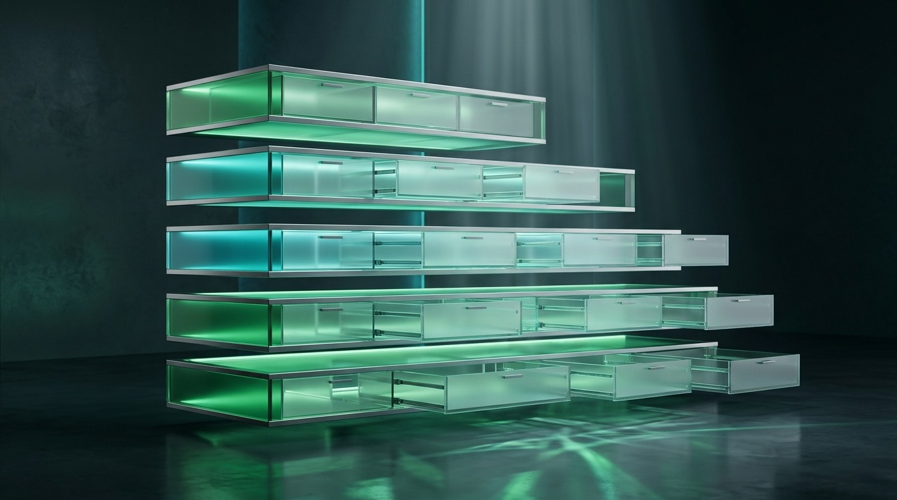
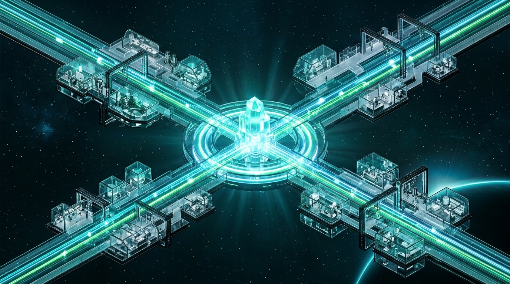

From zero-bloat progressive skills and lifecycle hooks to JSONC plugin bundles and parallel multi-agent swarms—mastering Google Antigravity across Desktop, IDE, CLI, and Python SDK.
Every project carries unwritten habits—naming rules, release checklists, safety boundaries, and favorite internal tools. Antigravity turns those habits into portable files that travel seamlessly across the desktop app, editor, terminal, and Python pipelines.
Instead of pasting long system prompts into every fresh chat, Antigravity splits agent customization into five sharp primitives: Rules (GEMINI.md, AGENTS.md) set contextual guardrails, Skills (SKILL.md) package repeatable procedures loaded only on demand, Hooks (hooks.json) run deterministic shell checks at six lifecycle moments, MCP Servers (mcp_config.json) wire external tools, and Plugins (plugin.json) bundle all four into one toggleable unit.
.agents/ or a personal plugin saved in ~/.gemini/config/plugins/ works identically whether you drive the agent from the Antigravity 2.0 desktop window, inline inside Antigravity IDE, over SSH with agy, or inside an automated Python test runner.
When multiple skills, rules, or plugins share a name, Antigravity resolves collisions deterministically. Higher tiers override lower ones, while resolved-path deduplication guarantees no rule file is ever injected twice in the same turn.
.agents/ (plus .agent/, _agents/, _agent/) and hierarchical GEMINI.md / AGENTS.md.skills.json or plugins.json (with entries & inherits).~/.gemini/config/.migrate-agent-settings: Discovers MCP servers, skills, commands, subagents, and rules from Claude Code, Codex, Cursor, and Gemini CLI, then bundles them into one reversible plugin at ~/.gemini/config/plugins/<name>/.migrate-workflows: Scans deprecated workflows/*.md and workflows.json files, creates modern skills/<name>/SKILL.md directories, and archives originals safely as .md.bak.skills.json & plugins.jsontools/agents/skills/ and point .agents/skills.json at them using workspace-relative paths. Use inherits to chain shared manifests and include_only / exclude regex patterns to filter one-level directory scans without copying files.
| Surface / Tool | Config & State Path | Sweet Spot & Strengths | When to Choose Another Option |
|---|---|---|---|
| Antigravity 2.0 App Desktop Orchestrator |
~/.gemini/antigravity/~/.gemini/config/ |
Parallel multi-project workspace, Auxiliary Pane, Swarm UI, Scheduled Tasks, Media Uploads. | Choose IDE for line-by-line Tab completions or CLI for headless SSH. |
| Antigravity IDE VS Code-Based Editor |
~/.gemini/antigravity-ide/<root>/.agents/ |
Passive Tab / Supercomplete, Cmd+I inline edits, Inline Code Lenses, Visual Diff Overlays. |
Choose Antigravity 2.0 App when managing multi-repo swarms and dashboards. |
agy CLITerminal Interface |
~/.gemini/antigravity-cli/settings.json |
Fast terminal TUI, -p non-interactive scripted runs, plugin import, remote shells. |
Choose Desktop App for rich visual artifacts, browser previews, or swarm boards. |
| Python SDK Programmatic Runtime |
pip install google-antigravity(bundled binary wheel) |
Async Agent(LocalAgentConfig(...)) orchestration in CI suites, eval harnesses, and scripts. |
Choose interactive surfaces when human-in-the-loop review is primary. |
migrate-agent-settings & migrate-workflows |
Targets plugins/<name>/ & skills/<name>/SKILL.md |
Converts Claude/Codex/Cursor/Gemini configs into one reversible plugin; upgrades legacy workflows. | Use agy plugin import claude|gemini for packaged extension directories. |
@[label](path) includes. Always-on and global rules share a 20,000-token budget (defaultRulesBudget); anything over budget is demoted to a file-path pointer, whereas built-in plugin rules are exempt.
Antigravity 2.0 pairs a workspace-aware sidebar on the left, a context-rich chat canvas and live Swarm Board in the center, and an HTML Auxiliary Pane on the right that tracks live subagents, files, and terminals.
proceed-in-sandboxlocalhost, docs.*
main • #api • #tests
api-author in workspace:"share" on #api. Referencing report #4 for @verifier.
/swarm /plan 4
@AGENTS.md @terminal-1 3
/security-audit on @src/auth/ and attach screenshot...”src/auth/token.ts.agents/hooks.json
Projects, open New Conversation, browse Skills & Customizations, or manage Scheduled Tasks (cron jobs & one-shot schedule timers).
always-proceed, request-review, strict, proceed-in-sandbox), toggle Terminal Sandbox, and set Browser Allowlists.
@ Mentions Context Picker: Attach files, folders, previous conversations, terminal sessions, rule files, or specific MCP servers and tools directly into any turn.
/ to launch built-in workflows or custom skills (/<skill-name>), and paste or drag-and-drop screenshots for multimodal context.
main and area #channels, worker states (waiting, working, stopped, killed), and clickable open_board sequence posts.
Subagents, Background Tasks, Artifacts, Files Changed, and Terminals—without leaving your thread.
customization://<dir> pages to review bundled skills, hooks, and rules, toggle plugins live with zero restart, or inspect active MCP servers under Additional Options (…) → MCP Servers.
Stuffing 40 runbooks into every prompt ruins reasoning accuracy and burns tokens. Antigravity solves this with progressive disclosure: lightweight signposts sit in memory at startup, while heavy procedures open only when the task calls for them.

SKILL.md runbooks, helper scripts/, and deep references/ strictly when activated.
skills/<name>/SKILL.mdname and a third-person description stating what it does and when to use it. Only those two fields load by default./<name>) activates the skill, Antigravity reads the full Markdown steps and validation checks.references/, templates to resources/, samples to examples/, and shell tools to scripts/ linked relatively.AGENTS.md / GEMINI.md RulesAGENTS.md and GEMINI.md along the path.AGENTS.md and GEMINI.md files take no frontmatter and stay active within their directory tree.trigger: model_decision vs always_on: Rules inside .agents/rules/*.md support always_on (unconditional, draws from the 20k-token budget), model_decision (progressive), glob, or manual.# Example: .agents/skills/db-migration-check/SKILL.md (metadata loads first; body & scripts load on demand)
---
name: db-migration-check
description: Validates SQL migrations for lock risks and rollback safety. Use when editing files in db/migrations/.
---
# Database Migration Safety Runbook
1. Run [check_locks.sh](./scripts/check_locks.sh) against the staged migration file.
2. Consult [zero_downtime_patterns.md](./references/zero_downtime_patterns.md) before altering indexed columns.description, write explicit trigger phrases (for example, “Use when the user asks to debug Next.js hydration errors”) and keep general coding advice out of SKILL.md.
hooks.json) & Bundle Anatomy
Rules advise the model politely; hooks enforce behavior in code. Placed in hooks.json at your customization or plugin root, synchronous type: "command" scripts receive camelCase protojson on stdin and steer execution on stdout.
| Lifecycle Event | When It Fires & Shape | Key Inputs (camelCase) & Output Capabilities |
|---|---|---|
SessionStart |
Once at new session start (flat array) | Reads common metadata (conversationId, cwd, modelName); outputs injectSteps such as nested systemMessage or user_markdown. |
PreInvocation |
Before each model call (flat array) | Receives invocationNum & initialNumSteps; injects steps or sets terminationBehavior: "terminate" paired with errorMessage. |
PreToolUse |
Before tool step runs (grouped + matcher) |
Matches tool name regex (e.g., run_command|view_file); returns decision (allow, deny, ask, force_ask), permissionOverrides, and shallow top-level overwrite. |
PostToolUse |
After tool finishes (grouped + matcher) |
Receives matching toolCall.id, stepIdx, and optional error; ideal for auto-linting or audit logs; expects {} on stdout. |
PostInvocation |
After tool calls finish (flat array) | Inspects turn completion; can inject steps or set terminationBehavior: "force_continue" or "terminate". |
Stop |
Loop termination (flat array) | Receives terminationReason, fullyIdle, and continuationActive; return {"decision":"continue","reason":"..."} to re-enter loop. |
hooks.json + Payload Contract"safety-and-tests" (toggleable via "enabled": true), declare PreToolUse, SessionStart, and Stop handlers; multiple plugins merge sequentially."matcher": "run_command|edit_file" (derived by lowercasing step type without CORTEX_STEP_TYPE_; use "*" for all).sh -c (or cmd /c) with CWD set to the folder containing hooks.json (use ./scripts/gate.sh and $PLUGIN_DATA; default timeout 30s).conversationId, stepIdx, hookEventName, and toolCall.args on stdin; write shallow overwrite merges or nested injectSteps: [{"systemMessage": {"systemMessage": "..."}}] on stdout.Stop hooks, always check if input["continuationActive"]: exit 0 before returning "decision": "continue" so the agent never loops forever.
// Example stdout from PreToolUse (shallow top-level arg rewrite) & SessionStart (nested systemMessage)
PreToolUse stdout: { "decision": "allow", "overwrite": { "CommandLine": "npm test -- --watch=false" } }
SessionStart stdout: { "injectSteps": [{ "systemMessage": { "systemMessage": "Policy active.", "metadata": {"user_markdown": "**Sandbox Guard Enabled**"} } }] }systemMessageoverwrite merges only top-level keys of toolCall.args (nested objects are replaced wholesale, and Antigravity prepends a notice naming changed keys). Likewise, injectSteps requires the double-nested {"systemMessage": {"systemMessage": "..."}} shape rather than a bare string.
When a workflow combines a skill, an always-on rule, a safety hook, and an MCP server, package them into a plugin at ~/.gemini/config/plugins/<name>/ (or .agents/plugins/<name>/) so teams can install or toggle the whole stack at once.
plugin.jsonplugins/<dir>/
├── plugin.json # JSONC (comments + trailing commas OK)
├── hooks.json # MUST sit at plugin root for native plugins
├── mcp_config.json # Stdio or Streamable HTTP (/mcp)
├── rules/AGENTS.md # Plain markdown, active while enabled
├── skills/<s>/SKILL.md
├── agents/<a>.md
└── assets/logo.svg # Relative path (≥128x128 square)
Supported plugin.json fields: name, displayName, description, logo, suggestedPrompts (max 3; extras ignored), version, author, homepage, repository, and disabled. Unknown top-level keys are silently dropped.
PLUGIN_ROOT & PLUGIN_DATA: Both MCP servers and command hooks receive PLUGIN_ROOT (plugin directory) and PLUGIN_DATA (persistent state dir for installed plugins). Hooks run inside the plugin folder, so pass ./hooks/check.sh --cache "$PLUGIN_DATA".strava-api, never db or search).url ending in /mcp). Legacy HTTP+SSE (/sse) is unsupported unless wrapped via npx -y mcp-remote.| Operation | Safe Pattern (Always Follow) | Dangerous Anti-Pattern (Never Do) |
|---|---|---|
| Inventory Plugins Language Server RPC |
Pipe lsrpc GetAllPlugins through jq to extract name, dir: (.path | split("/") | last), disabled, and component names. |
Never read unfiltered GetAllPlugins—it inlines full 16 KB+ SKILL.md texts and blows up context. |
| UI Deep Links Open Plugin Page |
Key every link on install directory <dir>: [<name>](customization://<dir>) (handles numeric Marketplace IDs too). |
Never use plugin.json’s name when it differs from <dir>, and never emit dead plugin:// links. |
| Toggle / Uninstall State Changes |
Direct users to customization://<dir> (live toggle, no restart) or <plugin-card catalog-id="..."> for Marketplace installs. |
Never hand-edit mode-0600 ~/.gemini/config/config.json (clobbers userSettings) or call restricted mutation RPCs. |
config.json & Restricted RPCs Are Off-Limits to Scripts~/.gemini/config/config.json is written atomically at mode 0600 and holds sibling userSettings and permission grants; hand-editing it misses live reload and risks data loss. Similarly, JetboxWriteState, DeletePlugin, and InstallCustomization are blocked inside run_command subprocesses.
When work splits cleanly into independent files or questions, a swarm spawns dedicated worker agents—each in its own fresh conversation—coordinating through one shared message board while you stay responsive as coordinator.

workspace:"share" or "branch" lanes while readers, verifiers, the narrator, and the monitor stay synchronized over scoped #channels.
swarm Actions: title, add, status (waiting, working, stopped, killed), models, model, kill, and channel.post_message, read_board, and swarm_wait{since} appear on the turn after your first add. Add workers, end your turn, then wait with swarm_wait{since:N}.#seq: Never copy-paste reports between workers; say @verifier check #4 and #6.inherit. Give concurrent editors workspace:"share" (own working copy) or "branch" (isolated clone). Merge commits before kill deletes the workspace!fork:"<member>" (or "coordinator") when a new worker needs prior reads and decisions.narrator (Overview UI; relay @narrator user feedback: ... without @ on member names) and monitor (stall detector; post [done] <summary> when finished).main Quiet with #channels & Switch Quota-Exhausted Workers with swarm{action:"model"}swarm{action:"channel", op:"create", channel:"api"}) and wake an entire area via @#api instead of noisy @all. If a worker hits quota exhaustion, switch it via swarm{action:"model", name:"..."} (leaving model unset uses yours)—never kill and re-add it, which discards its conversation.
Drop these five tested patterns straight into .agents/, ~/.gemini/config/plugins/, your coordinator prompt, or a Python automation script to stand up reliable workflows in minutes.
| Recipe & File Target | Copy-Paste Snippet (Ready to Drop In) | Behavior & Payoff |
|---|---|---|
1. Skill + Subagent Bundle.agents/skills/pr-audit/SKILL.md + agents/auditor.md |
---
name: pr-audit
description: Audit staged diffs for secrets and regressions. Use before opening a PR.
---
1. Invoke auditor subagent in read-only mode on git diff.
2. Run [verify_links.sh](./scripts/verify_links.sh) and attach findings. |
Zero startup token cost; loads subagent & script only when pre-PR auditing starts. |
2. PreToolUse Gate + Stop Test Check.agents/hooks.json + stop_gate.py |
{"test-gate":{"PreToolUse":[{"matcher":"run_command","hooks":[{"command":"./gate.sh"}]}],"Stop":[{"command":"python3 -c 'import sys,json; d=json.load(sys.stdin); print(json.dumps({\"decision\":\"continue\",\"reason\":\"Run pytest.\"}) if not d.get(\"continuationActive\") else \"{}\")'"}]}} |
Inspects shell calls before execution and enforces one verification pass without infinite looping. |
3. JSONC Plugin + Prefixed MCP~/.gemini/config/plugins/acme-ops/ |
// plugin.json
{"name":"acme-ops","description":"Ops dashboards and logs.","suggestedPrompts":["Tail prod errors","Check deploy status","Inspect DB pool"]}
// mcp_config.json
{"mcpServers":{"acme-ops-logs":{"command":"./bin/mcp","env":{"CACHE":"${PLUGIN_DATA}"}}}} |
Ships rule, skill, hook, and collision-free MCP server under one live-toggleable UI card. |
| 4. Multi-Channel Code + Verifier Swarm Coordinator tool sequence |
swarm{action:"title", title:"auth-v2"}
swarm{action:"channel", op:"create", channel:"backend", topic:"JWT"}
swarm{action:"add", name:"jwt-dev", workspace:"share", channels:["backend"], brief:"Own src/jwt.ts. Post diff & test summary to @verifier."}
swarm{action:"add", name:"verifier", workspace:"inherit", channels:["backend"], brief:"Verify jwt-dev posts; report issues to @jwt-dev, ready state to @coordinator."} |
Parallel shared-worktree edits, quiet main channel, and strict author/verifier separation. |
5. Python SDK Async Streamerscripts/ci_reviewer.py |
from google.antigravity import Agent, LocalAgentConfig, CapabilitiesConfig
cfg = LocalAgentConfig(system_instructions="Review diff.", capabilities=CapabilitiesConfig())
async with Agent(cfg) as agent:
res = await agent.chat("Check staged changes")
async for t in res.thoughts: print("[Thought]", t)
async for c in res.tool_calls: print("[Tool]", c.name, c.args) |
Streams live reasoning deltas and typed tool calls inside CI or automated eval suites. |
agents/<name>.md files, declare subagent: true, mainAgent: false, and an explicit tools: [...] list—omitting tools restricts the subagent to a tiny read-only default set.
tasks or n for Homogeneous Swarm Poolstasks:[...] or n:6 to swarm{action:"add"} to spawn runner-1..runner-6 in a single call.
Autonomous agents and multi-worker swarms move fast, so clear permission boundaries matter. Antigravity layers global security defaults, per-project overrides, OS sandboxes, and least-privilege SDK capabilities so speed never compromises safety.
always-proceed: Auto-runs commands without prompts (reserve for trusted, disposable environments).proceed-in-sandbox: Runs terminal commands inside a restricted sandbox automatically, pausing only when an action escapes sandbox boundaries.request-review: Prompts for user confirmation before running commands outside explicit allowlists.strict: Requires explicit approval across sensitive tool operations.allow, ask, or deny.| SDK Component | Configuration Pattern | Security & Runtime Behavior |
|---|---|---|
| Wheel Installation | pip install google-antigravity |
Includes the compiled platform runtime binary inside PyPI wheels; always install via pip rather than raw source copying. |
| Read-Only Default | LocalAgentConfig(system_instructions=...) |
Omitting capabilities locks the agent into read-only mode by default—ideal for log triage and code review bots. |
| Write Capabilities | capabilities=CapabilitiesConfig() |
Explicitly opts into write and execution tools (run_command, edit_file) inside the async Agent(config) context manager. |
| Live Audit & TUI | response.thoughts / tool_calls / run_interactive_loop |
Inspect every thought delta and strongly-typed ToolCall(name, args) event in real time, or embed an interactive terminal loop. |
proceed-in-sandbox with PreToolUse Hooks
Project policies control where commands run; PreToolUse hooks inspect what arguments are passed. Combine proceed-in-sandbox in Settings with a team hooks.json matcher on run_command that returns "decision": "force_ask" (ignoring cached "Always Allow" grants) whenever destructive flags or production URLs appear.
Scheduled Tasks, open Desktop App Settings to enable Keep computer awake, Run in background, and system completion notifications.
Each Antigravity primitive shines individually, yet their real leverage appears when chained together: lightweight rules frame context, hooks and plugins guard execution, a channel-scoped swarm builds in parallel, and a verifier signs off before commit.
Opening a workspace file loads walk-up AGENTS.md conventions plus lightweight SKILL.md descriptors—giving every spawned worker identical domain clarity without drowning its context window.
Installed plugins bring prefixed MCP tools and hooks.json gates. Every command proposed by any worker passes through PreToolUse and PostToolUse automatically.
#channel Swarm Builds in Parallel
The coordinator splits non-overlapping files into workspace:"share" authors on #api and #ui, keeping main quiet and relying on monitor to catch any stalls.
A dedicated inherit verifier checks author posts by #seq, authors commit and merge changes into the main workspace before kill runs, and the coordinator posts [done].
agy -p or the Python SDK.agents/ bundle and Stop hooks are tested interactively, run the same customization stack non-interactively in CI using agy or an async Python Agent(LocalAgentConfig(...)) script.
Most customization and swarm glitches stem from seven predictable gotchas—broken link keys, unfiltered RPC responses, hook casing mismatches, or noisy board channels. Spot the symptom below and apply the 10-second fix.
| Symptom / Failure Mode | Root Cause | 10-Second Fix |
|---|---|---|
| 1. Broken or dead plugin UI link | Link used plugin.json name or dead plugin:// scheme instead of folder <dir>. |
Extract dir: (.path | split("/") | last) via jq and emit [<name>](customization://<dir>). |
| 2. Context blows up inspecting plugins | Called lsrpc GetAllPlugins raw, inlining every 16 KB+ SKILL.md body. |
Always pipe GetAllPlugins through jq to project only name, dir, disabled, and component names. |
3. PreToolUse hook ignored or mangled |
Used snake_case keys instead of camelCase protojson, or expected deep-merge in overwrite. |
Read/write camelCase (conversationId, stepIdx) and supply complete top-level values in overwrite. |
4. Stop hook traps agent in infinite loop |
Hook always prints "decision":"continue" without checking continuation state. |
Check continuationActive on stdin; exit cleanly or allow stop once continuationActive is true. |
| 5. Swarm workers wake on unrelated tasks | Team chatter posted into main instead of area #channels, or overused @all. |
Create scoped #channels, route area briefs there, and use @#channel for cross-area asks. |
| 6. Quota-hit worker loses all progress | Coordinator ran kill and re-added a fresh worker instead of switching models. |
Wait until worker is waiting, then run swarm{action:"model", name} (unset model uses yours). |
| 7. Plugin settings vanish or fail to reload | Hand-edited mode-0600 config.json, clobbering sibling grants and skipping reload. |
Never edit config.json directly; link users to customization://<dir> or use <plugin-card>. |
SKILL.md lean with clear YAML trigger descriptions, and keep rules under 24 KB / 20k tokens.hooks.json sits directly at <plugin_dir>/hooks.json with camelCase I/O and loop guards.mcp_config.json and verify Streamable HTTP (/mcp) over legacy SSE.GetAllPlugins via jq: Confirm zero name collisions and test every customization://<dir> link against the folder name.workspace:"share" to writers, inherit to verifiers, and merge commits before kill.proceed-in-sandbox or request-review, and keep Python SDK agents read-only unless writes are required.